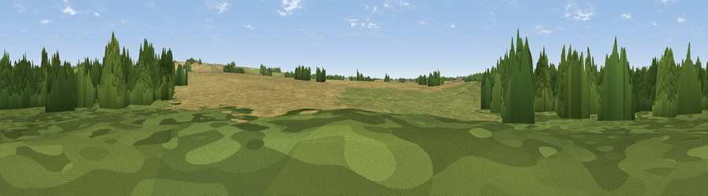

Bloater Hill
#41149 in England · top 81% of its area beats it · near North WillinghamThe view, rendered

A 360° render of this exact spot computed from the terrain model, tree cover and land cover — summer colours, afternoon light, calibrated against photographs of famous viewpoints. Real trees, hedges and buildings will differ in detail.
The panorama
Grey silhouette: terrain skyline in each direction (720 bearings, Earth curvature and refraction included). Dashed green: skyline with trees (+15 m) and buildings (+8 m) as obstacles. Blue strip: how far the ground is visible on each bearing.
Where the view opens
Wedge length = distance to the farthest visible ground on that bearing (vegetation-aware). Rings at 10, 25 and 50 km.
What fills the view
41% woodland · 34% cropland · 24% grassland
Angular shares of the visible panorama (visual magnitude), not map area. Landscape diversity 0.47 (0–1 Shannon).
Key numbers
More beautiful places nearby
The staircase of upgrades: each row has a higher view potential than everything closer. Driving times are estimates from straight-line distance, calibrated against real road routing — check an actual route before setting out.
| Place | Direction | Drive | Score |
|---|---|---|---|
| Viewpoint near North Willingham | NE · 2 km | ~6 min | 55.1 |
| Viewpoint near Walesby | N · 5 km | ~11 min | 57.9 |
| Viewpoint near Claxby | NNW · 7 km | ~14 min | 61.7 |
| Viewpoint near Claxby | NNW · 7 km | ~15 min | 64.9 |
| Viewpoint near Claxby | NNW · 9 km | ~17 min | 71.5 |
| Garrowby Hill (A166 crest) | NNW · 77 km | ~101 min | 71.9 |
| Viewpoint near Acklam | NNW · 81 km | ~105 min | 73.8 |
| Viewpoint near Wharncliffe Side | W · 84 km | ~108 min | 75.2 |
53.37046, -0.27566 · source: osm peak · position refined by local search. Computed location — check access rights before visiting.